地政学
平壌は朝鮮半島の軍事境界線、中国、ロシア、日本、米国の視線が交差する首都です。核、ミサイル、制裁、交渉が都市の儀礼と日常経済を左右します。地図上の首都である以上に、危機管理の発信点です。国境圧も近いです。
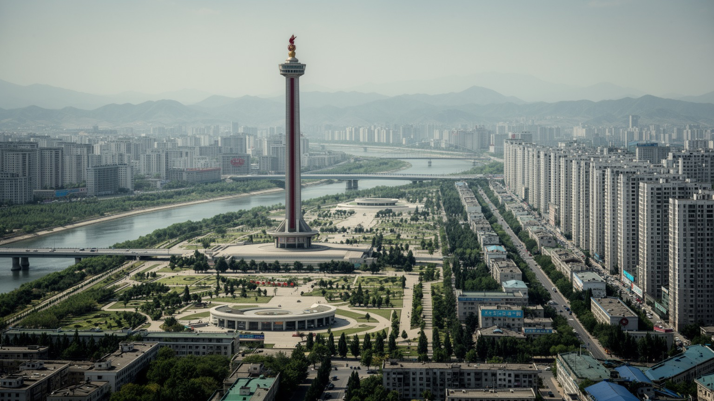
🇰🇵 朝鮮民主主義人民共和国 / 首都 / World City Atlas
大同江の両岸に広がる、北朝鮮の政治、軍事、産業、教育、儀礼の中心です。記念碑的な都市計画、住宅建設、統制された日常、食料とエネルギーの制約が、首都の景観を作っています。
都市の骨格
平壌は大同江、広い大通り、記念碑、住宅団地、工場、大学、地下鉄で構成される首都です。外から見える整った景観の奥に、移動統制、食料、電力、階層、制裁下の経済が重なっています。
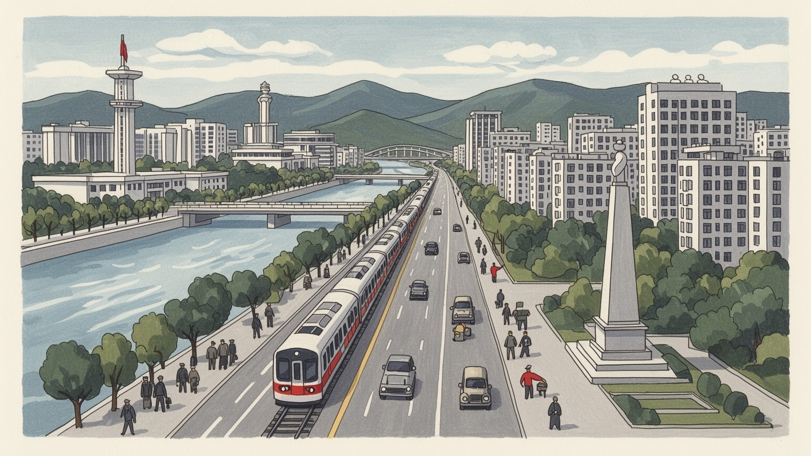
平壌は朝鮮半島の軍事境界線、中国、ロシア、日本、米国の視線が交差する首都です。核、ミサイル、制裁、交渉が都市の儀礼と日常経済を左右します。地図上の首都である以上に、危機管理の発信点です。国境圧も近いです。
行政、軍需、機械、繊維、食品、建設、研究機関が集まり、労働は国家配分と市場的な副収入の間で動きます。首都住民は相対的に優遇されますが、電力、食料、賃金、統制が毎日の仕事を形作ります。格差も残ります。
公式文化は革命史、指導者崇拝、集団行事、音楽、スポーツ、映画、学校教育と結びます。宗教は強く制限され、寺院や教会は限定的です。一方で祖先祭祀や家庭の記憶は、見えにくい生活文化として残ります。低く続きます。
観光客は広場、塔、地下鉄、凱旋門、博物館を案内付きで巡ります。住民は住宅配分、通勤、配給、市場、学校、停電、冬の暖房をやりくりします。整った大通りの裏側に、制約の多い都市生活があります。視線に配慮します。
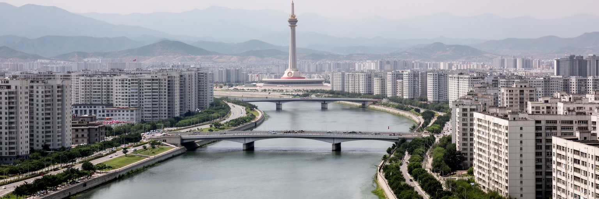
平壌の都市形を読む入口は、大同江を中心に組まれた軸線です。川の東西には広い道路、橋、記念碑、広場、行政施設、高層住宅が配置され、主体思想塔と金日成広場は互いを見通す象徴的な関係にあります。都市は自然に育った商業中心というより、国家が見せたい秩序を空間に置いた首都です。大通りは行進や祝典を受け止める幅を持ち、建物の正面性や夜間照明は政治的な舞台性を強めます。一方で、川沿いの整った景観は生活の全体を表すわけではありません。住宅団地、工場、学校、市場的な売買、停電への備え、冬の暖房、交通の少なさが、記念碑的な表面の背後にあります。大同江は都市を美しく分けるだけでなく、給水、橋梁交通、河岸整備、防災、余暇にも関わります。観光客が見る平壌は強く演出されていますが、その演出そのものが都市を理解する材料です。河岸の公園や橋の配置は、住民の散歩や通勤を受け止めながら、祝典時には大きな背景へ変わります。首都の中心部は、国家の正統性を毎日再確認するための景観として作られています。歩道の広さ、建物の間隔、銅像への視線、川面に映る照明まで、政治的な意味を帯びます。川沿いの余白は、式典と日常の境目を曖昧にします。平壌では都市計画が単なる機能配置ではなく、住民と訪問者に国家像を読み取らせる言語として働いています。
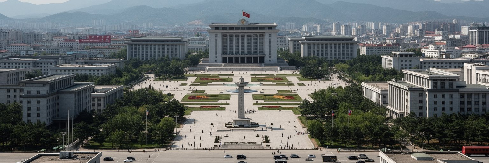
平壌は朝鮮民主主義人民共和国の首都として、国内統治と対外交渉が最も濃く集まる場所です。朝鮮労働党、政府機関、軍、外交施設、記念館、教育機関が集中し、政策の言葉は広場、新聞、学校、職場、祝典を通じて都市全体へ流れます。朝鮮半島は休戦状態のままで、米国、韓国、中国、ロシア、日本との関係は、平壌の政治日程と物資の流れに直接影響します。核・ミサイル開発、国連制裁、食料支援、人道機関の活動、国境管理、観光再開の有無は、外交ニュースであると同時に都市生活の条件です。平壌は外部から閉じた首都に見えますが、実際には国際政治に非常に強く結びついています。中国との貿易や鉄道、ロシアとの関係、韓国との緊張緩和や悪化は、物価、燃料、建設資材、外貨収入へ波及します。首都の外交施設や迎賓空間は、対話の可能性と孤立の深さを同時に示します。市民が政治を自由に論じる空間は限られますが、対外情勢は生活の不安や期待として感じられます。外から届く圧力は、宣伝の言葉だけでなく、商店の棚や燃料の量にも表れます。首都の行事は外へ向けたメッセージでもあり、国内へ向けた統制の確認でもあります。緊張は近いです。平壌を見る時、記念碑や軍事パレードだけでなく、制裁下で都市を保つ行政能力、外交的な駆け引きが住民の暮らしへ落ちる経路を読む必要があります。
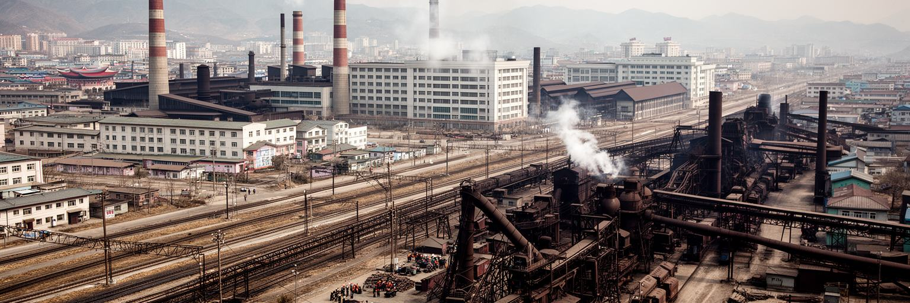
平壌の経済は、行政機能だけでなく、機械、金属、化学、繊維、食品加工、印刷、研究開発、軍需関連の産業と結びついています。北朝鮮の統計は不透明で、都市別の生産額を外部から正確に測ることは困難です。それでも首都が人材、配給、エネルギー、交通、教育を優先的に集める場所であることは重要です。工場労働者、公務員、研究者、教員、建設労働者、商店員、軍関係者は、国家配分の制度と市場化した生活実務の間で働きます。公式には計画経済が中心ですが、家庭の収入は配給や賃金だけでは足りず、非公式な売買、親族からの支援、小規模な商いが生活を補う場面もあります。平壌で働くことは、地方より条件が良いと見なされる一方、政治的な忠誠、身分、所属組織、居住許可によって機会が分かれます。制裁は輸出入、部品、燃料、外貨、技術移転を制限し、産業の更新を難しくします。停電や部品不足は工場の稼働だけでなく、通勤、食堂、保育、家庭の副業にも影響します。職場の所属は配給、住宅、学校、医療への近さも左右します。近年の住宅建設や街路整備は建設労働を生みますが、資材調達と労働動員の負担も伴います。平壌の産業を読むには、工場の規模だけでなく、誰が首都に住めるのか、どの職場が資源を得られるのか、労働の対価がどのように家計へ届くのかを見る必要があります。
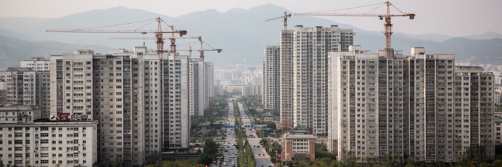
近年の平壌では、高層住宅団地や新しい街路が体制の成果として強く見せられています。未来科学者通り、黎明通り、松花通り、和盛地区などの開発は、科学者、教員、功績ある住民、選ばれた世帯へ近代的な住まいを与える物語と結びつきます。新しい住宅は都市の印象を大きく変え、色彩のある高層棟、広い歩道、商業施設、夜間照明が、以前の重い社会主義都市像を更新しています。しかし住宅建設は単なる景観刷新ではありません。居住権の配分、職場や身分による優先順位、維持管理、エレベーター、暖房、給水、停電、建材の品質が日常を左右します。外観が華やかでも、家の内部設備や公共サービスが安定しているとは限りません。さらに、新しい地区の建設には大規模な労働動員と資材集中が必要で、地方や他部門への負担も考える必要があります。平壌の住宅政策は、住民の生活改善であると同時に、国家が恩恵を配る仕組みでもあります。首都に新しい住居を持つことは、生活の利便性だけでなく、政治的な評価や所属の証しにもなり得ます。都市更新を読む時は、スカイラインの変化だけでなく、古い集合住宅に残る世帯、地方との格差、維持費を誰が負担するのかを見なければなりません。平壌の新築住宅は、近代性への欲望と統制された配分の両方を映しています。新旧の住宅差は、首都内部の階層も静かに示します。
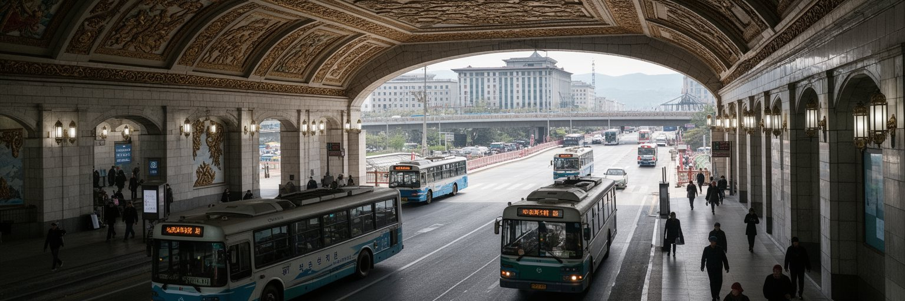
平壌の交通は、広い大通り、地下鉄、トロリーバス、路面電車、橋、鉄道駅、限られた自動車交通によって成り立っています。地下鉄は深い駅、装飾的な内装、モザイク、照明で知られ、観光コースにもよく組み込まれます。首都の公共交通は、住民の通勤や学校生活を支える実用施設であると同時に、国家が整備した近代インフラの展示でもあります。大通りの車の少なさは、都市を静かで整った印象にしますが、自家用車の普及が限られ、燃料や移動許可が制約されていることも示します。地方都市や農村から平壌へ自由に移ることは難しく、首都の交通は人の流れを開く装置というより、管理された移動を処理する装置です。鉄道は中国方面、南北分断の歴史、国内物資輸送と結びますが、設備の老朽化やエネルギー不足が課題です。市内の橋は大同江両岸を結び、政治中心、住宅地、工場、大学、空港方面への動線を作ります。停電や車両不足があれば、歩く距離や待ち時間はすぐ増えます。駅前の人の流れも統制の細部を映します。観光客には指定された移動経路が示され、普通の住民の移動とは別の見え方になります。平壌の交通を読むには、駅の装飾や広い道路の写真だけでなく、誰がどこへ行けるのか、通勤時間を何が決めるのか、燃料と電力の不足がどのように毎日の移動を変えるのかを見る必要があります。
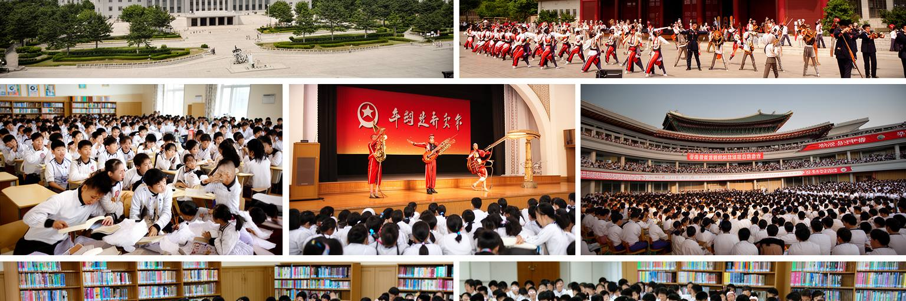
平壌の文化は、芸術、教育、スポーツ、記念行事を通じて国家の物語を伝える仕組みとして組み立てられています。学校教育では革命史、指導者への忠誠、科学技術、音楽、体育が重視され、少年宮殿や劇場、図書館、大学は首都の文化的な顔になります。集団体操や大規模公演は、個人の表現というより、身体をそろえることで国家の秩序を見せる芸術です。音楽や映画も、娯楽であると同時に政治的な教育を担います。一方で、住民の文化生活は公式行事だけで満たされているわけではありません。家庭の会話、料理、親族の記憶、韓国や中国の情報への関心、携帯端末、非公式な映像や音楽の流通が、統制の内側で生活の感覚を作っています。宗教活動は厳しく制限され、寺院や教会は限定的な存在です。それでも祖先を敬う慣習や季節行事、家族の墓参りに近い記憶は、公式イデオロギーとは別の層として残ります。平壌の文化を読む時、華やかな公演を単に宣伝として片づけるだけでは足りません。そこには訓練、労働、才能、教育投資、子どもたちの進路、家族の期待もあります。学校で選抜される才能は、家族の誇りと将来の配分にも関わります。稽古の時間も生活の一部です。同時に、表現の自由が狭いこと、文化が忠誠の評価と結びつくことも見なければなりません。首都の舞台は、感動と統制が重なる場所です。
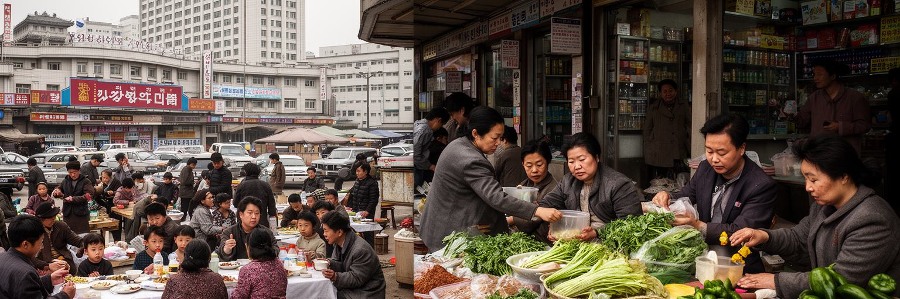
平壌の日常を理解するうえで、食料と市場は避けられない主題です。首都は地方より配給や物資の面で優先されやすいとされますが、それでも国家配給だけで生活が安定するわけではありません。住民は職場配給、商店、総合市場、親族からの支援、小さな副業、外貨に近い取引を組み合わせながら食卓を整えます。米、トウモロコシ、野菜、肉、魚、調味料、燃料の価格は、作柄、国境貿易、制裁、交通、政策、災害によって変わります。平壌の市場化は、公式には強く管理されながらも、家庭の生存戦略として広がってきました。女性が商いを担うことも多く、家計の実権や労働の意味を変えています。食料不足は北朝鮮全体の歴史に深い影を落とし、首都でさえも栄養、医療、子どもの成長、冬の備蓄に不安を残します。観光客が見るレストランやホテルの食事は、都市の平均的な食生活を代表しません。平壌の食を読むには、見える豊かさと見えない不足を同時に考える必要があります。家庭は保存食や燃料を工夫し、親族のつながりで不足を補います。台所は経済の温度計です。市場は単なる経済の例外ではなく、統制された制度の中で人々が生活を維持する現場です。価格や品ぞろえは、政治情勢より早く生活の変化を示すことがあります。食卓は、国家配分、家族の工夫、国境の開閉、世界経済を結ぶ小さな地図です。
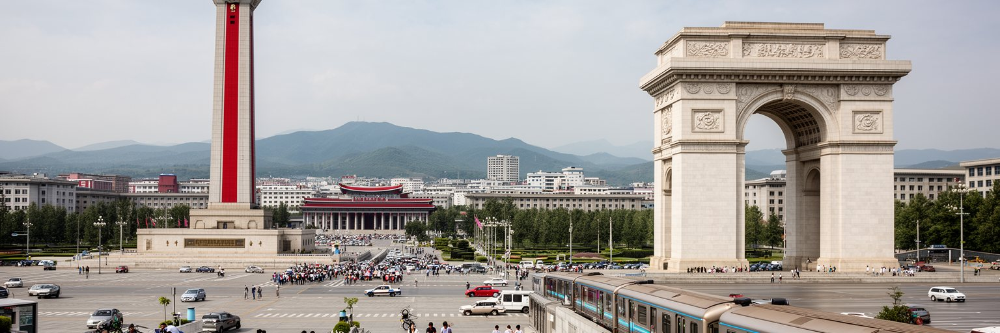
平壌の観光は、自由に歩いて偶然を楽しむ旅とは大きく異なります。訪問者は多くの場合、指定された案内、移動経路、撮影制限、宿泊施設の範囲内で都市を見ます。主体思想塔、凱旋門、金日成広場、地下鉄、万寿台、戦争記念館、学校や劇場の見学は、国家が示したい歴史と成果を順に読む構成になっています。この管理された観光は、見えるものを狭める一方、平壌が自分をどのように見せたいかを明確に教えます。記念碑の大きさ、清掃された広場、整列した行事、選ばれた住宅や施設は、都市そのものが展示空間になっていることを示します。旅行者は強い好奇心を持ちますが、住民のプライバシーや政治的リスクを軽く扱ってはいけません。何気ない会話や写真が、相手に不利益を及ぼす可能性があります。観光収入は外貨源になり、ホテル、案内員、運転手、土産品、文化公演に関わる人々の仕事を生みます。しかし制裁や国境管理、感染症対策、外交関係により、観光の開閉は大きく揺れます。旅程の外にある住宅地や市場を見られないことも、都市理解の条件として意識する必要があります。平壌を訪れる経験は、都市を見ることと、見ることを管理されることを同時に体験する旅です。そこでは、見えない生活や語られない不安を想像する倫理が求められます。観光の価値は珍しさだけではなく、都市表象と現実の距離を慎重に考える姿勢にあります。
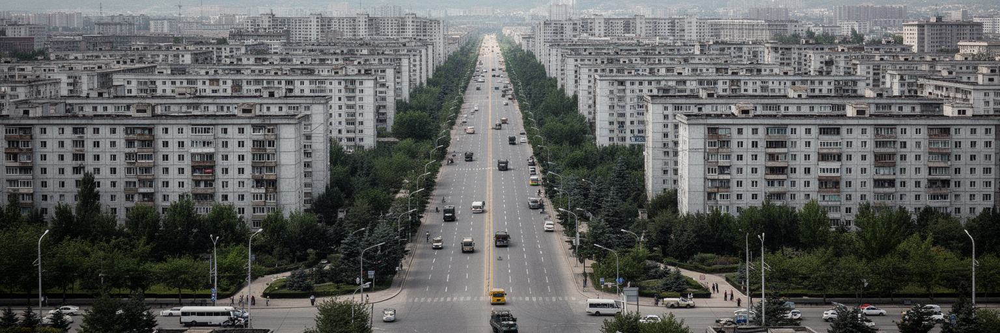
平壌は北朝鮮の中で最も資源が集中する都市ですが、その集中は平等を意味しません。首都に居住すること自体が選別され、身分、家族背景、職場、政治的忠誠、所属機関が生活機会に影響します。中心部の整った住宅や施設は、国が優先した人々に与えられる成果として見せられますが、その外側には古い住宅、生活インフラの不足、見えにくい貧困、地方との大きな差があります。移動の自由は制限され、地方から平壌へ自由に住み替えることは困難です。情報の流れも管理され、外部メディアへの接触や自由な政治的発言にはリスクがあります。この統制は恐怖だけで維持されるのではなく、配給、住居、職場、学校、名誉、監視、相互評価が細かく組み合わさることで日常に入り込みます。一方で、住民は受け身であるだけではありません。家庭、親族、市場、職場の関係を使い、限られた範囲で生活を改善しようとします。平壌の不平等は、高所得者と低所得者の差だけでなく、見えることを許される人、移動できる人、情報に近い人、配分を受ける人の差として現れます。新築住宅や商店の近さも、生活上の階層を映します。首都の美しい景観は、国家が資源を集中できる力を示すと同時に、その資源が誰に届くのかという問いを生みます。都市を読むには、整った表面の背後にある選別の制度を意識する必要があります。
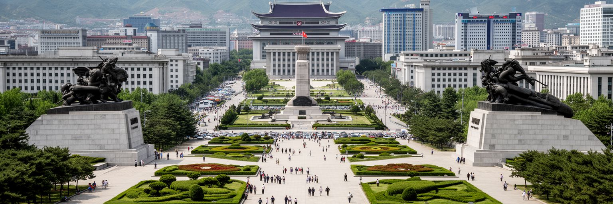
平壌は朝鮮戦争で大きな破壊を受け、その後、社会主義首都として再建されました。この破壊と再建の物語は、現在の都市景観を理解する重要な鍵です。広い大通り、記念碑、戦争博物館、烈士の記憶、反米教育は、単なる過去の説明ではなく、体制の正統性を支える現在の政治言語です。都市は戦争被害を記憶しながら、指導者の下で立ち上がった首都として語られます。住民の世代が替わっても、学校教育、記念日、映画、新聞、公演を通じて戦争の記憶は繰り返し共有されます。一方で、戦争の経験は南北の分断、離散家族、軍事境界線、徴兵、国防負担、外交不信として現在にも続いています。平壌の記念空間は、犠牲への追悼であると同時に、敵対意識を保つ装置でもあります。外部から見ると強い宣伝に見えますが、空襲や破壊の記憶が家族史として残る人々にとって、戦争は遠い歴史ではありません。都市の再建は生活の復旧であり、国家の物語でもありました。平壌を歩く時、古い都市の痕跡が少ないことは、近代化の成果だけでなく破壊の深さも示します。廃虚から計画都市へ変わった過程は、住民に誇りと緊張の両方を与えます。家族史にも深く残ります。記憶の扱い方は、将来の和解を難しくも可能にもします。戦争を語る首都は、過去を閉じ込める場所ではなく、現在の外交と市民生活を形作る場所です。
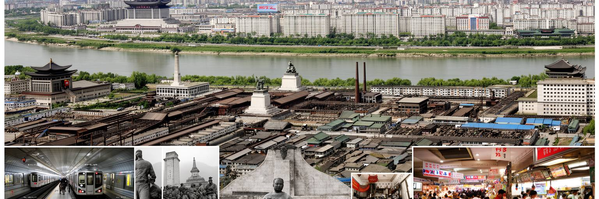
平壌を読む難しさは、見える都市と見えない都市の距離にあります。大同江沿いの記念碑、整った広場、高層住宅、地下鉄、劇場、学校は、国家が見せたい秩序と近代性を強く伝えます。しかしその背後には、制裁下の経済、食料と電力の不安、情報統制、居住許可、身分による選別、地方との格差、戦争記憶、非公式な市場の力があります。平壌は単なる閉鎖都市でも、単なる舞台装置でもありません。そこには働き、学び、子どもを育て、冬に備え、家族を支える人々の日常があります。ただし、その日常を外部から自由に観察することはできず、語られる言葉にも制約があります。だからこそ、都市を読む時には、写真に写るものだけで断定せず、統計の不確実さ、案内された視線、政治的な演出、生活の工夫を慎重に重ねる必要があります。平壌は北朝鮮の特権的な中心であり、同時に国家の脆弱性を覆い隠す前面でもあります。住宅開発は改善を示しながら配分の不平等を示し、広い道路は秩序を示しながら移動の制限を示します。観光の見どころは、見ることの管理そのものを考えさせます。この首都は、半島の対立、社会主義都市計画、市場化、家族の生活、国際制裁を一つの景観に重ねています。見えない部分を断定しすぎない態度も重要です。平壌を理解することは、都市がどれほど政治的な存在になり得るかを学ぶことでもあります。